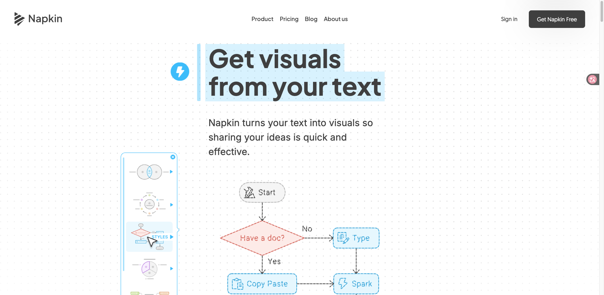

粘一段文字，点一下，得到一张能直接放上幻灯片的图。
左边是被选中的原文，右边是它生成的流程图 —— 这是 Napkin 的整个工作流
如果你已经写好了文稿，直接把段落粘贴进来就行。
如果只有零散的想法，先打几行字，让 AI 帮你补成句子。
两种入口，最后都汇到同一个地方：点闪电生成视觉，再从右侧的样式里挑一个。
由左侧高亮段落生成 · 流程图 / 思维导图 / 信息图 三种样式可换
Napkin 的视觉语言刻意“非工程”：极淡的点阵背景、圆角胶囊节点、粉彩填充（浅蓝 / 浅绿 / 浅粉）、虚线箭头，节点里塞一个线条小图标。它画的是给读者看的解释图，不是给工程师看的系统图。

一个把文本转成视觉的 Web 工具。你把笔记、文章段落粘进去，它识别其中的结构（并列、流程、因果、数据），生成可编辑的图，再导出到演示或社媒。也提供 API 批量生成。
支持流程图、思维导图、信息图、数据图表和可直接演示的幻灯片。